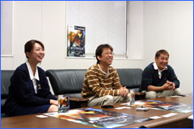

--今回は『メトロイドプライム』の続編ということですが、開発の経緯を教えて下さい。
田邊：
2003年４月頃から、アメリカと日本を行ったり来たりして作り始めたのがスタートですね。今回のテーマは『ダークとライト』なんですが、これはＮＯＡ（Nintendo of America）の子会社であるレトロスタジオからの提案でした。で、このアイディアを見て「どこかで聞いたようなネタだなあ」と思ったんですよ。それって『トライフォース（ゼルダの伝説 神々のトライフォース）』と同じじゃ？と。２つの世界を行ったり来たりして闘うという案は、実はかつての自分が考えたアイディアだったんです（笑）。10年ぶりに同じテーマを持った作品を扱うことになりましたが、まあ両方とも自分が関わってるからいいのかな、なんて。
--それは驚いたでしょうね（笑）。
田邊：確かに…でも、１０年ぶりに同じテーマを全く違う作品で、どう表現できるかなという部分で、非常に楽しみでもありました。
--新作を作るにあたって、特に注意した部分はどこでしょう。
大谷：前作のストーリーは、正直に言うとあまり奥深い展開というものがあまり感じられなかったと思います。おもにサムスが１人で謎を解いていく、という感じでしたよね。でも今回は、他のキャラクターを使ってストーリー部分を拡げて行こう、という話になりまして。『光と闇』ではライトビーム、ダークビームなんていう設定も生まれまして、表裏一体の世界といった設定もかなり練り込みました。

田端：前作を遊んでいない方でもスイスイ遊べるように、ビーム攻撃力や特性の使い分けなどに気を遣いました。今回は光の生物に対してはダーク属性の武器を、闇の生物に対してはライト属性の武器を使うということになっているんですが、さらに弾薬システムなんかも盛り込んで戦略性の幅を拡げています。この辺りのシステムを上手く使うよう、プレイヤーに対して考えさせるという部分はちょっと難しかったですね。
--新要素として挙げられる部分は、まずマルチプレイでしょうか？
田邊：そうですね。メトロイドというゲームは基本的には一人で遊ぶゲームだとは思うんですが、ファン同士が一緒に遊べる環境があったら、楽しいんではないかと思って採用しました。アメリカでは『ＦＰＳ（ファーストパーソンシューティングゲーム）』が最先端なんですよね。なので、基本的にはＦＰＳのマルチプレイになっています。確かにあちらのＦＰＳと純粋に比較されると、操作性の違いに若干違和感を覚えるかも知れません。でも、ぜひともメトロイドファンの人同士で遊んで欲しいです。
--ＦＰＳが市場のシェアを多く占めているということでですか？
田邊：そうです。ＦＰＳか格闘アクション系、後はスポーツ系のゲームで９割近く行くんじゃないでしょうか。任天堂は新しくゲームを作る時に「これまでにない部分を持ったもの」というのを最優先に作ります。とにかくほかの作品との差別化なんですが、メトロイドプライムシリーズでは１スティック操作を意識して取り入れました。ＦＰＳは基本的にスティックを２本使って遊ぶものが多いんですよ。でもそれは逆に言うと、ＦＰＳをしない人から見たらとても敷居の高い操作方法ですよね。日本でＦＰＳに馴染みのない人でも、気軽にチャレンジできるということで、この部分は気を遣いました。
--２本スティックだったら諦めてしまう人が多いでしょうね。慣れない人には、確かに難しいと思います。
田邊：ゲームの難易度的には、メトロイドって決して易しくないんです。逆に、やや難しいレベルだと思います。ですから操作系統をできるだけ楽にして、間口は広げつつ、かつゲーム自体の難易度はそこそこに保つようにしました。そうでないと、従来のファンの皆さんからは「難しくないとメトロイドじゃない！」と言われるんですよね（笑）。
|